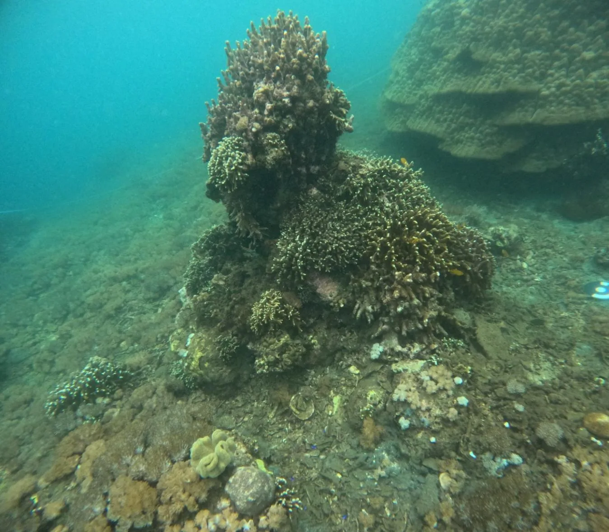
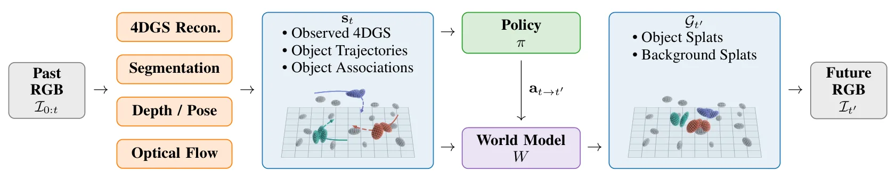
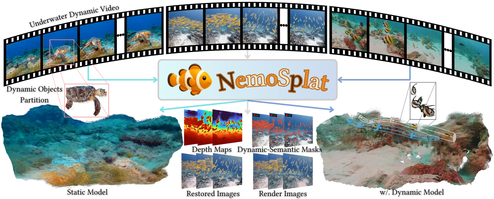
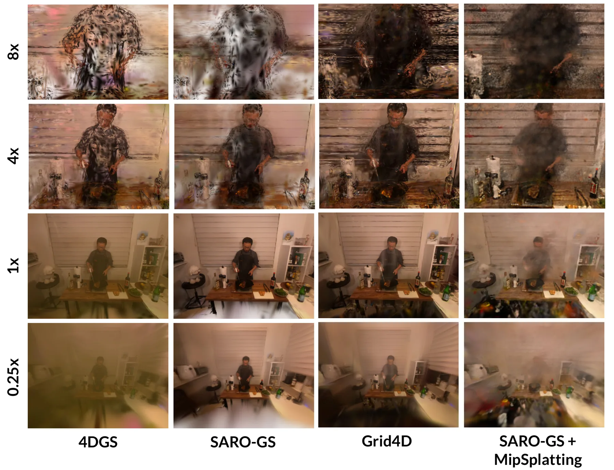
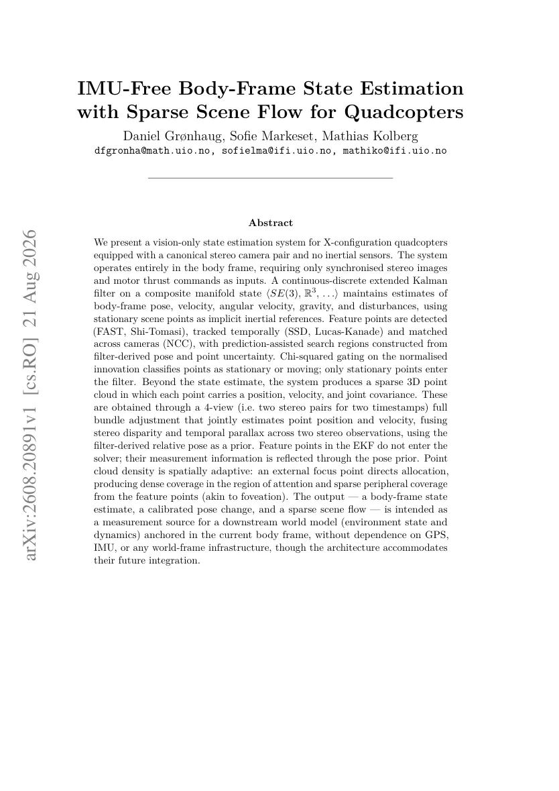
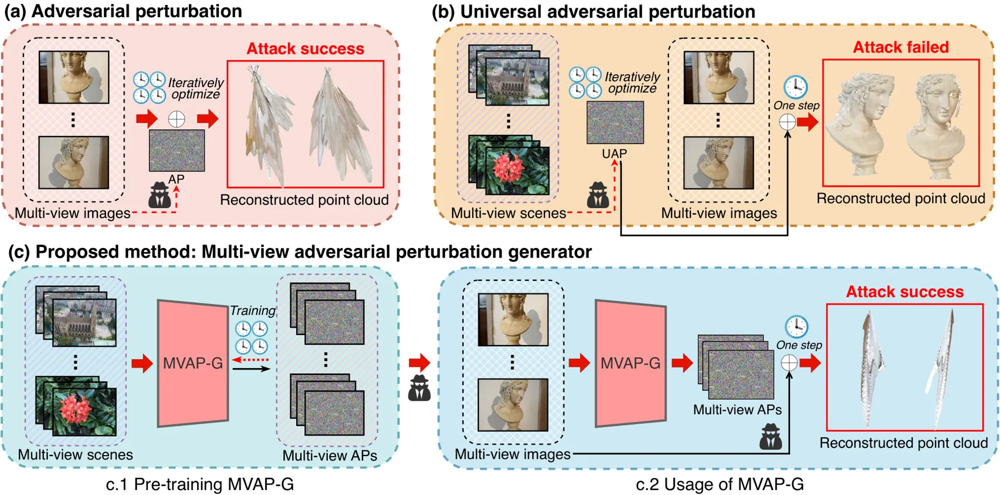
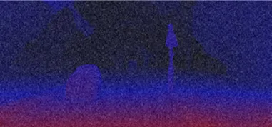
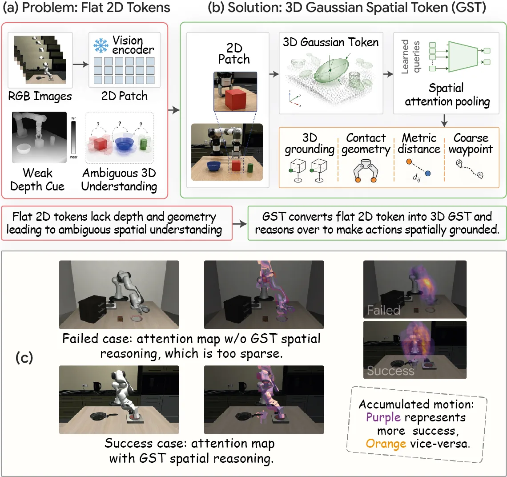

新论文 · 日期 2026-08-24 · score 26 · S层 · Geometry Foundation Models / 3D Foundation Models · cs.CV
内容级别：完整单篇海报
作者：Yingxiang Xu, Kerui Ren, Wenqi Guo, Changjian Jiang
评分 10/10
几何 foundation model水下重建单目 SLAMpointmap
一句话工作总结：把 foundation model 几何先验、流式建图和水下成像补偿结合起来，直接处理恶劣介质中的可靠跟踪与重建。
AquaFlow 在大规模水下数据上微调 3D vision foundation model，用于鲁棒位姿和 pointmap 估计；结合介质引导的增量 Gaussian 初始化，以及带物理光学补偿的混合场景表示，并在 62 条水下轨迹上进行评估。
Recent monocular 3D Gaussian Splatting (3DGS) streaming reconstruction methods have achieved impressive performance by balancing reconstruction quality and efficiency. However, extending these frameworks to un…

新论文 · 日期 2026-08-27 · score 18 · S层 · 3D/4D Spatial Perception · cs.CV
内容级别：完整单篇海报（待补全）
作者：Yueen Ma, Zenglin Xu, Irwin King
评分 9/10
4DGS动态场景世界模型对象中心
一句话工作总结：将持久 4D 表示连接到动作预测，为动态建图、世界模型和预测式规划提供桥接思路，但仍需关注其 work-in-progress 状态。
4DGS-WAM 分离动态对象与静态背景，用策略模型预测动作、世界模型预测对象 Gaussian 的变换；未来状态复用已经观测的静态内容，把预测集中在动态对象演化上。
Current world action models (WAMs) typically operate on 2D visual data. These models can achieve exceptional visual quality, but they lack explicit spatial structure for individual objects and repeatedly proce…

新论文 · 日期 2026-08-24 · score 18 · S层 · 3D/4D Spatial Perception · cs.CV
内容级别：完整单篇海报（待补全）
作者：Xiaopeng Guo, Wai Chung Tse, Yipeng Zhu, Hanwen Zhang
评分 9/10
4DGS水下重建动态解耦介质建模
一句话工作总结：在单一前馈框架内联合处理水下几何、动态干扰和介质成像，适合与 AquaFlow 对照跟踪精度和部署代价。
NemoSplat 从未标定海洋视频前馈估计相机位姿和稠密深度，使用置信度感知动态解耦器隔离瞬态实体，并联合预测 Gaussian 属性和物理介质参数，同时发布水下动态数据集。
Reconstructing photorealistic scenes in unconstrained underwater environments remains challenging due to severe media-induced light scattering and unpredictable dynamic objects. Recent feed-forward visual foun…

新论文 · 日期 2026-08-23 · score 18 · S层 · 3D/4D Spatial Perception · cs.CV
内容级别：完整单篇海报（待补全）
作者：Xinhui Liu, Lei Liu, Zhenghao Chen, Lebin Zhou
评分 8/10
评测基准3DGS4DGS模型压缩
一句话工作总结：为动态 Gaussian 表征提供受控的几何、时序、存储和流式成本评测，不再只比较渲染质量。
M³ISR 提供 25 个场景、两类相机/运动配置、6 个同步 1080p 视图以及 RGB、相机参数、深度、语义/实例分割和静态—动态掩码，覆盖 3DGS/4DGS 合成、流式重建和压缩五个 track。
High-fidelity free-viewpoint video (FVV) and interactive rendering increasingly rely on explicit Gaussian representations, yet practical deployment remains constrained by representation size, dynamic updates,…

新论文 · 日期 2026-08-22 · score 16 · S层 · 3D/4D Spatial Perception · cs.CV
内容级别：完整单篇海报（待补全）
作者：Ankit Dhiman, Kunal A Kathare, Pranav Vignesh, Lokesh R Boregowda
评分 8/10
4DGS无混叠渲染运动感知新视角合成
一句话工作总结：从几何—采样角度改善 4D 表征的视点变化质量，后续需验证快速运动和在线计算开销。
论文针对动态新视角合成中的混叠，提出结合局部运动信息的三维平滑滤波器，并根据时间与焦深比的联合密度自适应选择滤波强度。
Novel-view synthesis of dynamic scenes, crucial for AR/VR applications, remains a challenging problem. Recent methods adapt representations like 3D Gaussian Splatting (3DGS) and Neural Radiance Fields (NeRF) f…

新论文 · 日期 2026-08-21 · score 15 · S层 · 3D/4D Spatial Perception · cs.RO, cs.CV
内容级别：完整单篇海报（待补全）
作者：Daniel Grønhaug, Sofie Markeset, Mathias Kolberg
评分 9/10
可靠状态估计双目场景流EKF
一句话工作总结：强调 body-frame、显式协方差和场景流输出，是无 IMU 或 GNSS-denied 条件下的可靠估计基线。
系统仅使用同步双目图像和电机推力命令，在机体系内通过连续—离散 EKF 估计状态，并以四视图 bundle adjustment 联合估计稀疏点的位置、速度和协方差，通过统计门控筛选静态点。
We present a vision-only state estimation system for X-configuration quadcopters equipped with a canonical stereo camera pair and no inertial sensors. The system operates entirely in the body frame, requiring…

新论文 · 日期 2026-08-21 · score 11 · S层 · Geometry Foundation Models / 3D Foundation Models · cs.CV
内容级别：完整单篇海报（待补全）
作者：Qi Song, Ziyuan Luo, Haoliang Han, Renjie Wan
评分 8/10
3D foundation model对抗攻击多视图几何鲁棒性
一句话工作总结：揭示多视图几何 foundation model 的一致性攻击面，应纳入位姿、pointmap 和 dense correspondence 的可靠性测试。
MVAP-G 面向 VGGT 等多视图 3D foundation model，一次前向生成跨视图一致的微小扰动，避免逐场景迭代优化，并显著降低几何重建性能。
The Visual Geometry Grounded Transformer (VGGT) enables unified feed-forward 3D reconstruction from multi-view images. However, deploying such a high-performance model may expose critical security vulnerabilit…

新论文 · 日期 2026-08-22 · score 10 · S层 · 3D/4D Spatial Perception · cs.CV
内容级别：完整单篇海报（待补全）
作者：Bohan Li
评分 7/10
双目匹配视差估计扩散模型几何细节
一句话工作总结：改善底层双目几何质量，为稠密深度和后续 3D/4D 表征提供更细致的输入。
StereoDiffuer 用显著性模块提取边界、细结构和锐利边缘，以初始视差和置信度特征条件化迭代去噪，修正代价体正则化和上采样造成的细节损失。
With the advance of deep neural networks, the quality of disparity maps obtained through stereo matching has steadily improved. However, existing stereo matching methods still struggle to preserve fine-grained…

新论文 · 日期 2026-08-25 · score 9 · A层 · Embodied Navigation / VLN / Spatial Reasoning · cs.RO, cs.CV
内容级别：半海报（待补全）
作者：Md Selim Sarowar, Md Tanvir Islam, Sungho Kim, Sangtae Ahn
评分 8/10
VLA空间推理3D token机器人操作
一句话工作总结：清晰展示从几何表征到空间推理再到操作决策的桥接路径，需继续检验深度误差和 sim-to-real 鲁棒性。
GaussVLA 用 Gaussian Spatial Tokenizer 将语义和深度特征提升为紧凑 3D Gaussian tokens，并通过深度感知 Chain-of-Thought 进行结构化几何推理；在 LIBERO 上报告 200M 参数和 93.5% 平均成功率。
Vision-Language-Action (VLA) models encode visual observations as flat 2D patch tokens that carry no intrinsic geometric structure, and augmenting them with dense monocular depth injects per-pixel scalar value…
新论文 · 日期 2026-08-28 · score 8 · A层 · Embodied Navigation / VLN / Spatial Reasoning · cs.CV
内容级别：半海报（待补全）
作者：Tianjie Ju, Zheng Wu, Yueqing Sun, Yuhan Cui
评分 8/10
具身导航空间推理城市环境闭环评测
一句话工作总结：把空间推理置于持续移动和真实尺度约束中，明确暴露局部能力难以组合成长期目标行为的问题。
UrbanGround 在由全域 3D 地理数据构建的香港物理约束城市副本中，评估 MLLM agent 的局部感知、空间问答和闭环导航；结果显示长程探索中的方向、行人感知和误差修正仍不可靠。
Multimodal large language models (MLLMs) can interpret a street view, but urban agency depends on whether such local evidence remains useful after the agent starts to move. In this paper, we investigate how fa…